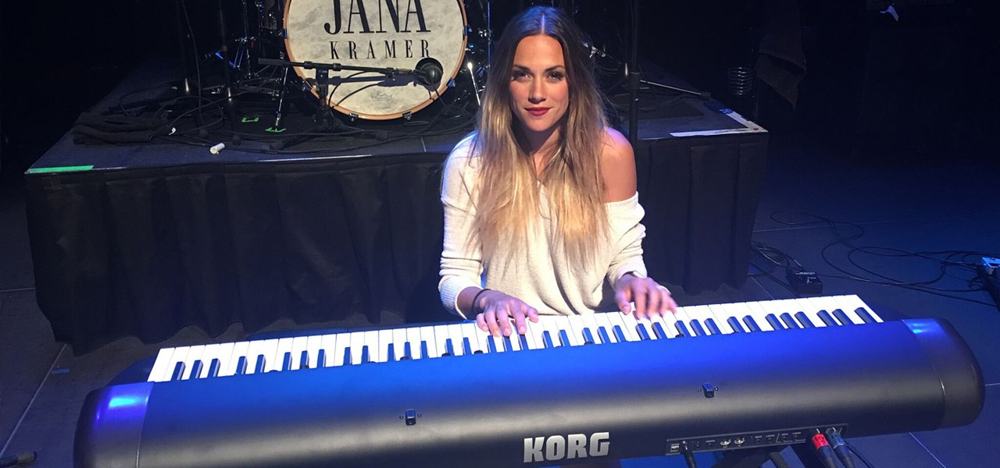

Descubre a los referentes y a los nuevos artistas de la familia Korg.
-
Herbie Hancock
Few can be called legends and continue to amaze us with their insightful and fresh creativity. But Herbie Hancock is one of those few, and if anyone can bring musical exploration to uncharted territory, he’s the guy. A pianist since age seven, Herbie admits to being a “gadget freak,” and has simultaneously embraced jazz, funk, and avant-garde electronic music creation while still fulfilling the inclination to make an acoustic journey in between those electric efforts.
-

Jana Kramer
Michigan born Jana Kramer is an actress and country music singer/songwriter. With an impressive string of movie and television roles since 2002, Kramer began a country music career in 2012 with the single "Why Ya Wanna" from her self-titled debut album and released her latest album Thirty One in 2015. She has been nominated for various American Country Awards, CMT Awards and has won an ACM Award for Top New Female Artist in 2013.
-
Jordan Rudess
Voted "the best keyboardist of all time" by MusicRadar, Jordan’s virtuosic writing and performance abilities along with his knack for cutting-edge technology enable him to continuously expand on his already iconic role in the modern keyboard landscape. As a long-time member of the Korg family, Jordan has provided important product feedback throughout the years and he has helped create some of the sounds heard in Korg products, like the Kronos Music Workstation.
-
Cory Henry
"The Kronos does a great job of making you feel as if the instrument that you're playing is right in the same room as you. Every time I browse another sound, it kind of gets me into a different place that makes me just want to play, as if I am a violin player, or if I have an actual electric piano in my house. It does a great job of making you feel that you're playing the actual instrument."
-
LaDerrick Jr
LaDerrick is a musician/producer from East Orange, New Jersey who started his musical journey at the age of 3 with a great passion for Drums. He cultivated that passion into other instruments like Piano, Organ and Bass Guitar. He has performed/worked with: Alicia Keys, Tinashe, Future, The Weeknd, Marvin Sapp, Tye Tribbett, Donnie MCclurkin and many more.